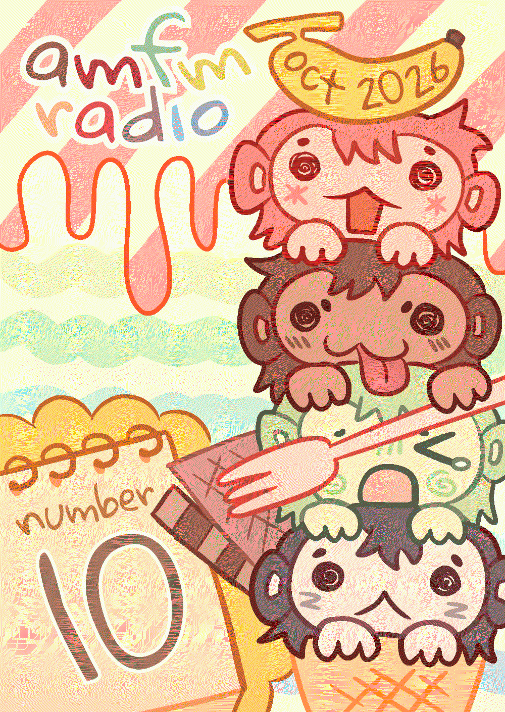
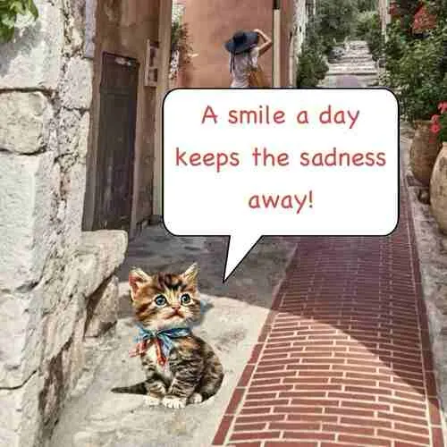
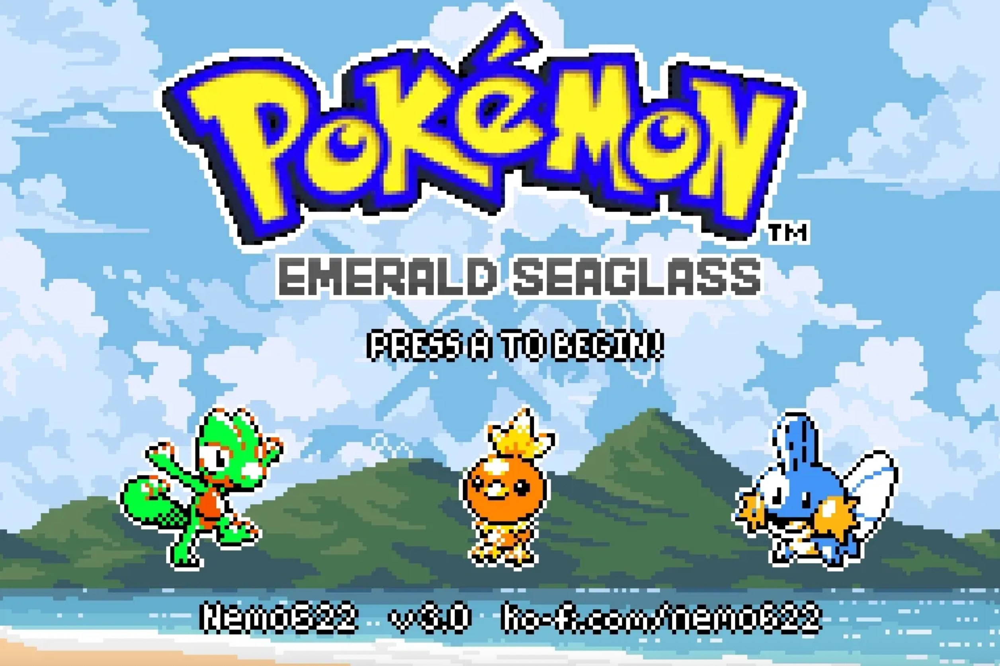
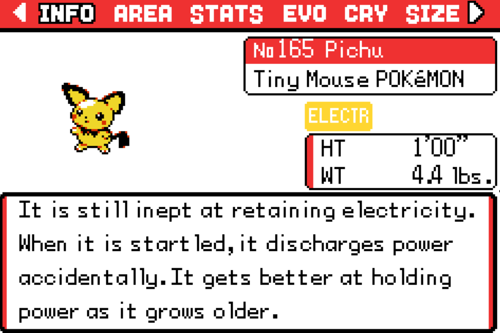
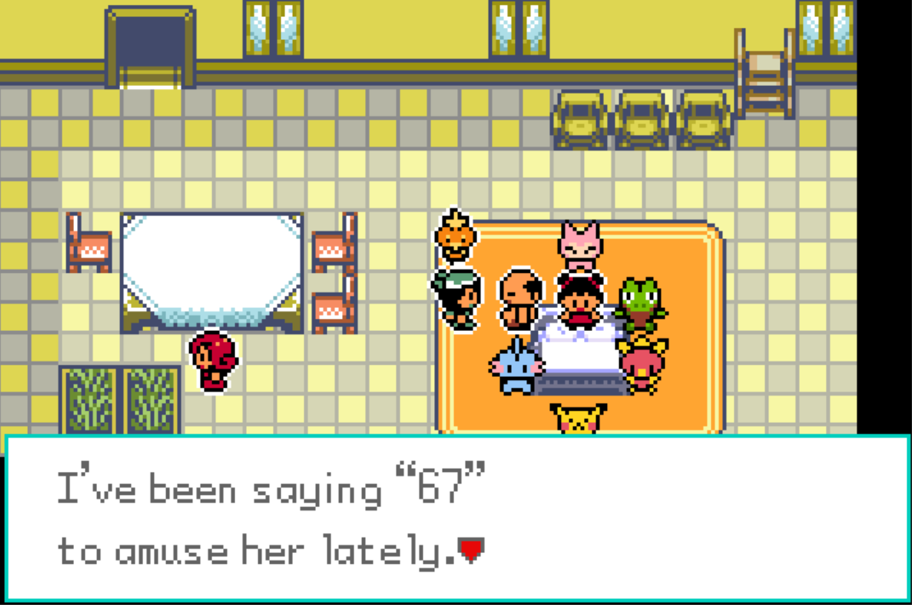
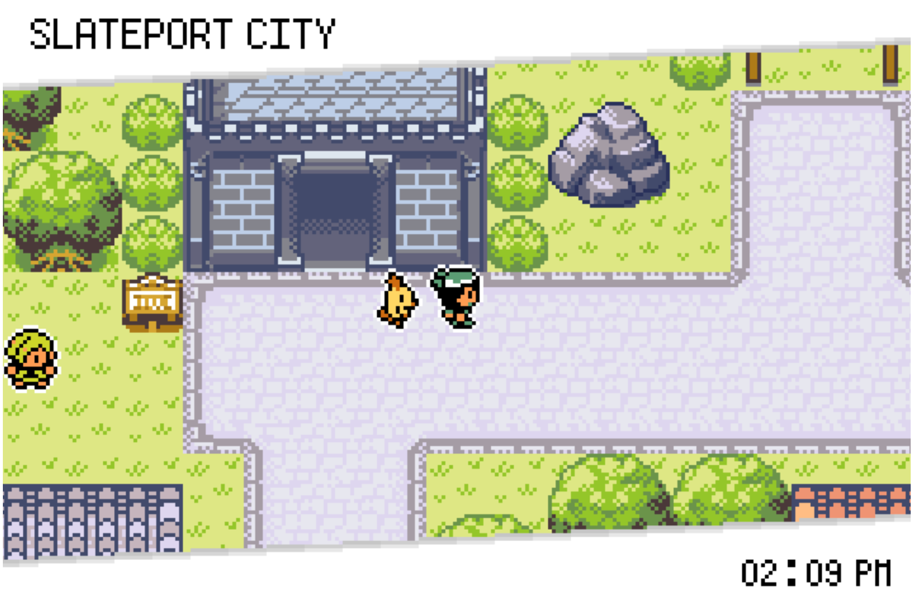
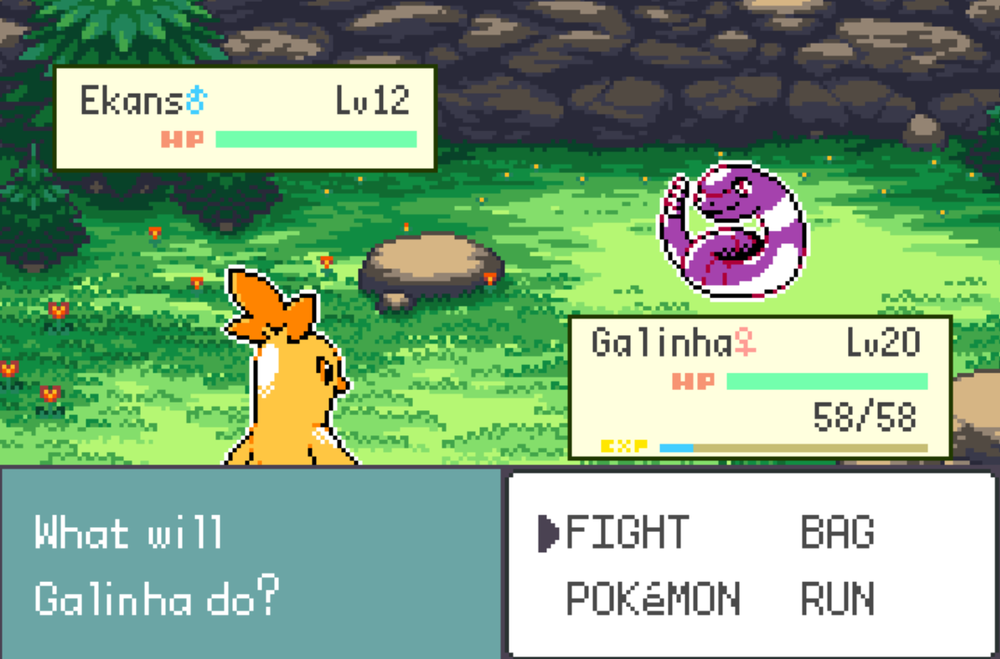

[2026/10/31]
October 2026

Happy Halloween! (I don't celebrate it :P)
Only a few months left in 2026… time sure flies just like that. I don’t really know how to feel about it. The hours are long, but the months and years are short. Soon enough I will be approaching the age where I truly need to get my shit together or else it’ll be over for me and I was hoping that by this point I’d be happier and actually proud of my life. Well, I’m not sure how to answer that question. I’ve maybe grown as a person, but I think I’m still far from achieving what it is I want to be or do.
Speaking of, I wanted to share a few things I stick to the top of my head using imaginary sticky notes that help me to keep pushing on through this nonsense we all call life… I have a few friends who always wished that they would be someone, or do something, but not be able to be that person or do that thing (I know I sound vague, but bear with me). As in, I’d always listen to them tell me “I wish that I could do ___”, or “Everyone else can do ___ but me…”, things like that.
This could go for pretty much anything. Wanting to learn a daunting new language, wanting to make a video game, wanting to start a garden, wanting to become really good at catching a grain of rice in thin air using a pair of chopsticks… Maybe I’m too hopeful and optimistic about things, but I always thought that if other people could do it, then I could do it too. The same goes for everyone else. Of course, there’s some obstacles to entry sometimes that make shit difficult, like not having the time, or issues with perfectionism, or stuff like that. And to that, I wanted to share the things I constantly repeat to myself when it comes to becoming more stubborn in achieving your goals:
1. You have to be comfortable with sucking at something for a long time before you get good at it
2. The best time to start was 20 years ago, the second best time is now. The time will pass anyway
3. Just start on something. Literally just start doing it. Thinking too hard on how to start, what to do, and shit like that just ends up paralyzing you to do nothing. Sometimes, you just have to bite off more than you can chew and learn to chew it
4. If you want to doomscroll, it’s better to spend that time doing something else (I’ve configured my phone to display my daily usage hours, and it’s been making me feel enough shame to get off my ass…)
5. Miro, the creator of Fear and Hunger, would procrastinate on his university work by programming his game. You should start labelling your day-job or your schoolwork as your side quests instead and label the shit you wanna do as your main goals (it’s what worked for me)
6. Your future self will thank you. Rather than using the fear of failure as a motivator, try using the sense of pride you will feel for yourself for succeeding
7. And even if you end up failing, that’s still great; most people don’t even try!
Maybe some of you will find some of these corny, but they’re sayings that I’ve read or heard over the years, and it’s become so cemented in everything I do and it’s helped me achieve some of my goals, so I hope that some of these would rub off on you guys and help you too.

I had a talk with a friend about our favorite games, and then that conversation slowly steered into talking about the collapse of the video game industry and how every modern AAA game sucks so much. I can’t think of a single big-corpo video game I have thoroughly enjoyed this year outside of Splatoon Raiders (which is a genuine 9.9/10 game, I only took away 0.1 point because the only way to get to floor 999 of Bottomless Buffet is if you get the 0.01% drop rate for a primo high-octane eliter. Otherwise, it’s genuinely a fucking flawless game) and it’s really dawned on us that the state of the video game industry is not good! Game prices continue to increase while the quality of video games continue to stay mediocre. Looking at my favorites list, it’s all indie games too.
The collapse of the gaming industry seems mostly tied to its pricing. There’s absolutely no way kids are convincing their parents for an 80 USD video game nowadays, let alone a console costing near a thousand USD or a PC that costs more than that… Only adults who have adult money get to buy games, and they don’t even have the time to play it anyway. Then I start thinking about how living gets more and more expensive with each passing day, how the working class gets poorer and poorer and the rich get richer and how the middle class is disappearing, and it’s like, okay, I have to stop thinking about this, it makes me spiral a little, and it gives me brain damage.
My friend recommended that I play old favorites. My old favorites almost always consist of old ass games made over a decade ago. Lately, I have been trying to play through all of Pokemon SoulSilver, but despite being considered the peak of pokemon, it’s such a slog to get through… I’m not gonna spend most of this blog complaining about it, but my interest in playing old pokemon games is slowly dwindling despite my love for pokemon still being very big and real. I can’t even find myself having fun playing through all of Platinum despite it being one of my favorite video games.
So recently, out of curiosity, I entered the world of Pokemon romhacks! The first one I played was a few months ago, FRLG.IPS, and that one was fun and incredibly interesting. I wanted to see what other romhacks there were, so I found people recommending Pokemon Unbound… but I heard that one blows every other romhack out of the water, so I need to start with something else. I’ve settled with this one called Pokemon Emerald Seaglass by Nemo622.

At its core, it is a graphical reskin of Pokemon Emerald (which I never finished) for the GBA. The story stays almost the same and it is not meant to be a difficulty hack (making fights more challenging on purpose). However, there’s many much needed QOL changes, a few new events, an amazing level cap system, (that desperately needed to be in place to make gyms actually feel like gyms!) and I’ve found it to be far superior to vanilla Emerald. The main selling point is its gen 2 inspired artstyle; here’s some of my screenshots so far. The game is insanely gorgeous!




A small detail that I found incredibly charming is that, when a pokemon faints in battle, your pokemon/the foe’s pokemon does a cry and a little dance (where the animation changes slightly based on the pokemon), like they’re celebrating their victory… It’s so sick.
I’m still far from finishing this hack, but it’s been such a joy to play through. Whether you’re new to pokemon or a longtime player, I want you to try this hack! After this one, I want to play Pokemon Lazarus (the second romhack made by the creator, featuring an entirely new region based on Greece, a new story and gen 2 inspired graphics). The team behind this is in development with their third romhack, Pokemon Alola Seaglass, which is a GBA-style recreation of Sun/Moon in a similar style to Emerald Seaglass. Alola is one of my favorite gens, so I’m super excited for that one!
I found out that one of the sprite artists has his own blog where he documents his spriting process. I’m not someone who does pixel art because I find that having to constrain my drawings into panels is a little difficult and a skill in itself, but I still found his process to be very informative and interesting!
I'll link it here.
As usual, I reserved the last part of the blog for shop/work updates: I got almost nothing this time! August and September were hellish months so I have decided to take a break for myself. I only managed to finish some new MLP and Gachiakuta stickers last month, and they should be up in my shop starting next month, but it’ll be a while until I have any more new stickers afterwards. I’ve already made a to-do list of what stickers to draw and make and hung it up on the wall so hopefully I get to knock them out one by one.
Some final words: Rest in peace RJ Mitte… Breaking Bad continues to be my all-time favorite TV show, and hearing about his suicide was heartbreaking. I was reading up on his life and it was devastating to know that he was the sole breadwinner of his family since age 13 yet lived mostly in debt due to his shitty business manager taking all his earnings. He was an advocate for disability rights and all over the internet I saw people posting photos of their pictures with him and how he was a wonderful person. Bryan Cranston’s heartfelt statement on the passing of his “sweet son on Breaking Bad” made some of my friends cry reading. It made me contemplate on the circumstances of why people commit suicide. A lack of support, geopolitical and financial luck to access resources, failure of the systems in place… It is all so sad.
Everyone’s already said their piece on reaching out when you’re in a mental crisis, but it confuses me that there exists people who say that ‘your friends are not your therapists and you need the actual help of mental health professionals to be able to tackle your problems’. To be honest, I find that fucking idiotic as someone who grew up in a country with zero knowledge and access to mental help of any kind. I think that being a fair-weather friend is the worst type of friend you can be, and I find it to include not being there for your friends when they are in a mental crisis. It’s not that I’m saying that you should be the one to take care of your friends; but if you’d be there for your friends when they’re in the hospital with broken legs, why would you act differently if they were struggling with depression and feel lost?
I hope all of you have a nice November.